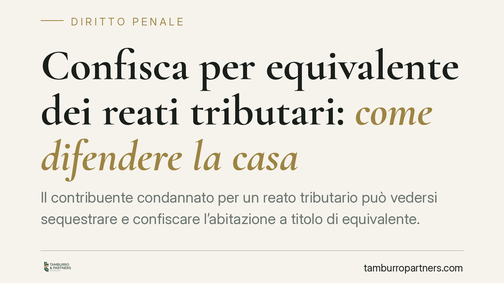

Confisca per equivalente dei reati tributari: come difendere la casa
Il contribuente condannato per un reato tributario può vedersi sequestrare e confiscare l'abitazione a titolo di equivalente. La misura, però, incontra limiti: il principio di proporzionalità impone di non eccedere l'importo del profitto illecito. Quando l'immobile è l'unico bene aggredibile, resta rilevante la sorte dell'eventuale eccedenza sul ricavato della vendita.

Il contesto
Nei procedimenti per reati tributari è frequente il sequestro preventivo di beni finalizzato alla successiva confisca. Quando il denaro o i beni che costituiscono il profitto del reato non sono disponibili, la legge consente di aggredire altri beni del condannato per un valore equivalente: è la cosiddetta confisca per equivalente (o di valore).
L'abitazione, salvo i limiti di legge in materia di prima casa per la riscossione esattoriale, può rientrare tra i beni confiscabili in sede penale. Da qui l'interrogativo pratico: quando il fisco, per il tramite del procedimento penale, aggredisce la casa per debiti connessi a reati tributari, quali margini di difesa esistono?
Inquadramento normativo
La norma centrale è l'art. 12-bis del D.lgs. 74/2000, introdotto dal D.lgs. 158/2015, che disciplina in modo specifico la confisca — diretta e per equivalente — per i reati tributari. Prima di tale disposizione il riferimento operava tramite il richiamo all'art. 322-ter c.p., che oggi conserva valore di modello storico e di raccordo sistematico, ma non è più la base normativa principale per questa materia.
La confisca per equivalente ha natura sanzionatoria e colpisce beni del reo per un valore corrispondente al profitto del reato. Proprio per questa funzione, il suo perimetro è vincolato dal principio di proporzionalità, di matrice costituzionale (art. 42 Cost.) e convenzionale (art. 1 Prot. add. CEDU, come interpretato dalla Corte EDU in materia di tutela del diritto di proprietà). La misura non può eccedere l'importo del profitto illecito accertato.
Il principio di proporzionalità e l'unico immobile
Il nodo si pone quando l'immobile da aggredire è l'unico bene del condannato e il suo valore supera l'importo oggetto di confisca. In questi casi il sequestro dell'intero bene può risultare legittimo in sede cautelare — non essendo materialmente frazionabile l'aggressione —, ma l'effetto economico finale deve essere delimitato.
La logica è lineare: se la confisca per equivalente non può eccedere il profitto del reato, l'eventuale eccedenza del ricavato dalla vendita del bene, rispetto all'importo confiscato e alle spese, non può essere trattenuta dallo Stato e deve essere restituita al condannato. Si distingue così tra la legittima aggressione dell'unico immobile e la necessaria delimitazione del risultato economico della misura.
Resta invece da maneggiare con cautela ogni analogia con istituti civilistici. La conversione del pignoramento prevista dall'art. 495 c.p.c. opera nell'esecuzione forzata civile e non costituisce fondamento diretto della disciplina del sequestro e della confisca penale, che seguono regole proprie. Eventuali richiami in sede penale hanno valore meramente argomentativo e vanno verificati caso per caso.
Implicazioni pratiche
Per il contribuente/condannato questo significa che il margine difensivo non consiste soltanto nel contestare l'esistenza del reato o del profitto, ma anche nel presidiare la proporzionalità quantitativa della misura in ogni sua fase: cautelare, di merito ed esecutiva.
È utile distinguere i momenti. Nella fase cautelare si discute del sequestro preventivo davanti al GIP e, in sede di impugnazione, al tribunale del riesame. Nella fase esecutiva della confisca assume rilievo la corretta quantificazione del profitto e la sorte dell'eventuale eccedenza sul ricavato. La proposta di beni alternativi o di somme corrispondenti non è un automatismo codificato, ma può essere valutata nel contraddittorio con l'autorità giudiziaria, in funzione del rispetto della proporzionalità.
Cosa fare in concreto
- Verificare l'entità del profitto contestato: controllare che l'importo oggetto di sequestro e confisca corrisponda al profitto effettivamente accertato e non lo ecceda.
- Attivarsi nella fase cautelare: valutare l'impugnazione al tribunale del riesame contro il sequestro preventivo, dove lo spazio di argomentazione sulla proporzionalità è più ampio.
- Documentare l'unicità del bene: raccogliere la documentazione patrimoniale utile a dimostrare che l'immobile è l'unico bene aggredibile e il suo valore.
- Presidiare la fase esecutiva: monitorare la quantificazione finale e richiedere la restituzione dell'eventuale eccedenza del ricavato rispetto all'importo confiscato e alle spese.
- Rivolgersi tempestivamente a un difensore: è opportuno intervenire già nelle prime fasi del procedimento, quando le decisioni sulla misura cautelare incidono sull'intero sviluppo successivo.
Disclaimer
Contributo informativo a cura di Tamburro & Partners - Avv. Giuseppe Tamburro. Non costituisce parere legale.
Ogni condominio ha una storia a sé.
Se gestisci un'amministrazione e vuoi un confronto su una specifica questione condominiale, scrivi allo studio. Ti rispondiamo entro un giorno lavorativo.